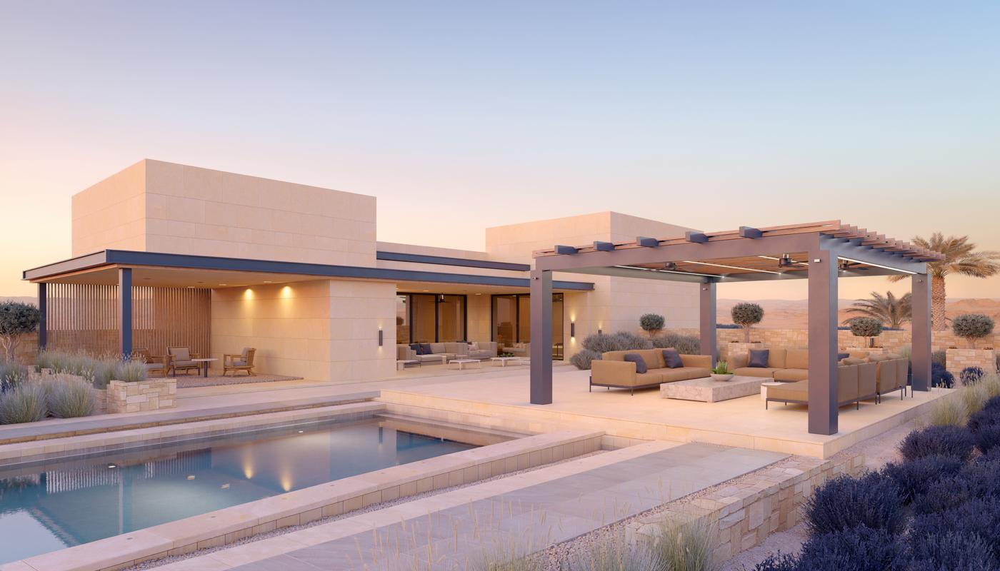

مقاول استراحات الرياض | 0502833163
تبدأ فكرة الاستراحة برغبة في مكان يجمع الأسرة ويمنح الضيوف جلسة مريحة، ثم تتوالى الأسئلة عن مساحة المجلس وموقع المسبح وتجهيز المطبخ وتكلفة البناء، ويصبح اختيار مقاول استراحات الرياض خطوة مؤثرة في شكل المشروع وطريقة استخدامه، خاصة عندما تحتاج إلى توزيع يجمع الخصوصية وسهولة الحركة والاهتمام بالمرافق الخارجية.
وسنوضح في مقالنا اليوم كيف تختار تصميم الاستراحة حسب مساحة الأرض، وما الذي يدخل في أعمال البناء والتشطيب، وسنتناول تجهيز المسابح وتجديد الاستراحات القديمة والعوامل التي تغيّر السعر، حتى تستطيع مناقشة احتياجاتك ومقارنة العروض قبل الاتفاق على التنفيذ.

مقاول استراحات الرياض
يتولى مقاول استراحات الرياض تنسيق الأعمال المطلوبة حسب نطاق التعاقد، وتشمل مراجعة موقع المباني والخدمات وتجهيز الأرض وتنفيذ الهيكل والتشطيبات، ويمكن أن يتضمن المشروع مسبحًا وجلسات ومظلات وأسوارًا، ولذلك ينبغي تحديد مسؤولية كل جزء قبل البداية.
ويحتاج مقاول بناء استراحات إلى معرفة الاستخدام المقصود، فاستراحة الزيارات العائلية تختلف عن شاليه للإقامة أو مكان مخصص للتأجير، ويتغيّر عدد الغرف والحمامات وتجهيز المطبخ وفق عدد المستخدمين وفترات بقائهم، كما تُراجع التراخيص المناسبة لطبيعة المشروع.
ويتيح موقع خدمات الرياض إرسال تفاصيل العقار والأعمال المطلوبة، ويمكنك توضيح حاجتك إلى تجهيز موقع جديد أو تحديث مبانٍ قائمة أو تكسير ورفع مخلفات، ثم الاستفسار عن نطاق الخدمة المتاح وتفاصيل ترتيب الطلب.
تواصل معنا على 0502833163، واذكر موقع الأرض ومساحتها والمرافق التي ترغب في إضافتها، وأرسل صور الموقع أو المخطط المتاح لتبدأ مناقشة طلبك بتفاصيل تساعد على تحديد الخطوة التالية.
لماذا تختار مقاول استراحات في الرياض؟
تحتاج الاستراحة إلى تنسيق المباني والمساحات المفتوحة، لأن مجلسًا مناسبًا دون خدمات قريبة، أو مسبحًا يصعب الوصول إلى معداته، يضيف صعوبات أثناء الاستخدام، ويساعد مقاول استراحات الرياض على ترتيب العلاقات بين المرافق قبل تثبيت أماكنها.
ويستفيد صاحب المشروع من مقارنة شركات ومقاولي بناء الاستراحات العائلية في الرياض حسب تخصصاتها، فبعض الجهات تقدم أعمال الهيكل، وأخرى تشمل التشطيب أو تجهيز الموقع الخارجي، ويُطلب بيان الأعمال التي تنفذها الجهة مباشرة والأعمال التي تحتاج إلى مختصين.
ويُقيّم أفضل مقاول بناء استراحات وشاليهات بالرياض من خلال قدرته على شرح المقترحات وتحديد أثرها في السعر والصيانة، ويُفضل اختيار خامات مناسبة للاستخدام بدل الاعتماد على المظهر وحده، خاصة في الأرضيات المكشوفة والمناطق المحيطة بالمسبح.
مقاول بناء استراحات فلل الرياض
يسمح تجهيز استراحة داخل أرض الفيلا بإضافة مكان للضيافة أو اجتماع الأسرة، ويحتاج التصميم إلى المحافظة على حركة الدخول والمواقف والوصول إلى خدمات المنزل، كما تُراجع إمكانية البناء والارتدادات والمساحات المسموح بها قبل اعتماد التوزيع.
ويحدد مقاول بناء استراحات موقع المجلس والحمام والمطبخ حسب الاستخدام، ويمكن تخصيص مدخل مستقل عندما تسمح المساحة والاشتراطات، ويُراعى توجيه النوافذ وحجب الرؤية عن الأماكن الخاصة دون إغلاق التهوية والإضاءة.
ويُناقش أفضل مقاول بناء استراحات وشاليهات بالرياض مستوى ارتباط الاستراحة بالفيلا، مثل مشاركة بعض الخدمات أو تخصيص تجهيزات مستقلة، ثم تُحدد مسؤولية الربط والاختبارات، ويُراجع أثر المشروع في المباني والتمديدات القائمة قبل التنفيذ.
وتفيد مراجعة أعمال شركات ومقاولي بناء الاستراحات العائلية في الرياض في التعرف على تصميمات تناسب أراضي الفلل، لكن اختيار نموذج سابق يحتاج إلى تعديله وفق أبعاد العقار واحتياجات الأسرة، لأن نقل التصميم دون مراجعة الموقع يسبب تعارضات.
تصميم الاستراحات الصغيرة في الرياض
يحتاج المشروع الصغير إلى ترتيب الأولويات، فإذا كان الاستخدام الأساسي للضيافة يمكن إعطاء المجلس والجلسة الخارجية مساحة أكبر، بينما تصبح غرفة النوم والمطبخ أكثر أهمية عند الإقامة، ويساعد مقاول استراحات الرياض على تحديد التجهيزات الضرورية قبل إضافة عناصر تستهلك الأرض والميزانية.
ويُفضل تقليل الممرات غير الضرورية واختيار أثاث يتناسب حجمه وأبعاد الغرف، كما يمكن استخدام أبواب ونوافذ تسمح بالاستفادة من الضوء دون الإضرار بالخصوصية، وتُراجع أماكن التكييف والمقابس قبل تثبيت الأثاث.
ويبحث مقاول بناء استراحات إمكانية تنفيذ المشروع على مراحل، فيُجهز ما تحتاج إليه حاليًا وتُنسق تمديدات الإضافات المستقبلية عندما تكون مناسبة، ويمنع التخطيط المبكر إزالة أرضيات أو إعادة حفر أجزاء مكتملة عند التوسع.
ويستفيد الباحث عن مقاول تشطيب وترميم استراحات بالرياض والدرعية من الفكرة نفسها عند تطوير استراحة صغيرة قائمة، إذ يمكن تعديل توزيع الأثاث والإنارة وتجديد التشطيبات دون زيادة المباني، بعد فحص حالة المرافق وتحديد الأعمال اللازمة.
أفضل أفكار تصميم الشاليهات والاستراحات
يجمع التصميم المناسب بين مكان للجلوس وتجهيزات تخدم الزوار ومساحة خارجية قابلة للاستخدام، ويمكن ربط المجلس بإطلالة على الحديقة، أو تخصيص جلسة مظللة قرب منطقة الطعام، شرط مراعاة التعرض للشمس والخصوصية والصيانة.
ويُراجع أفضل مقاول بناء استراحات وشاليهات بالرياض موقع ألعاب الأطفال بعيدًا عن حركة السيارات ومناطق الشواء والمياه، وتُختار أرضيات وتجهيزات تناسب الفئة العمرية، كما يُبحث توفير رؤية تسمح للبالغين بمتابعة الأطفال أثناء الجلوس.
وتساعد مقارنة شركات ومقاولي بناء الاستراحات العائلية في الرياض على التعرف على بدائل المظلات والواجهات والإنارة، ثم يُختار ما يناسب الميزانية وطبيعة الاستخدام، ويمكن توجيه الإنفاق إلى راحة الجلسات والتهوية قبل العناصر الزخرفية.
ويُطرح موضوع تجديد الاستراحة على مقاول تشطيب وترميم استراحات بالرياض والدرعية عندما تكون المرافق الأساسية موجودة، فيُراجع إمكان تحسين الإطلالات وتجديد مناطق الطعام وتغيير الإنارة، ثم تُحدد التعديلات التي تحتاج إلى أعمال إنشائية أو تغيير تمديدات.
طريقة بناء الاستراحات في الرياض
تبدأ أعمال مقاول استراحات الرياض برفع المقاسات ومراجعة حدود العقار والمناسيب والخدمات، ثم تُعد المخططات وتُستكمل الإجراءات المطلوبة قبل التنفيذ، ويُحدد نظام الأساسات وفق التصميم وبيانات الموقع، دون اختيار طريقة بناء لمجرد سرعتها أو انخفاض تكلفتها.
ويجهز مقاول بناء استراحات برنامجًا يربط أعمال المباني والخدمات والمرافق الخارجية، وتُراجع مواقع الخزانات وشبكات المياه والصرف والكهرباء قبل إغلاقها، كما تُحدد أماكن تخزين المواد ودخول المعدات لتقليل إتلاف الأعمال المنجزة.
وتشمل المتابعة فحص الأعمال في مراحلها المناسبة، مثل مراجعة التمديدات قبل تغطيتها والتحقق من تجهيز الأسطح قبل العزل والتشطيب، وتُوثق التغييرات التي يطلبها المالك وتأثيرها في المبلغ والمدة قبل تنفيذها.
ويُناقش الباحث عن رقم مقاول استراحات في الرياض لتصميم وتنفيذ المسابح توقيت أعمال المسبح أثناء إعداد البرنامج، لأن الحفر والهيكل وغرفة المعدات والتوصيلات تحتاج إلى تنسيق مبكر، خاصة عندما تكون الاستراحة محدودة المساحة.
تنفيذ المسابح والجلسات الخارجية
يرتبط البحث عن رقم مقاول استراحات في الرياض لتصميم وتنفيذ المسابح برغبة في إضافة مرفق ترفيهي، لكن اختيار المقاسات وحده لا يكفي، إذ يحتاج المسبح إلى تصميم مناسب للاستخدام وتجهيزات تدوير وترشيح وعزل وسلامة وصيانة.
ويُحدد مقاول استراحات الرياض موقع المسبح بالتنسيق مع المختصين، وتُراجع علاقته بالمباني والخدمات والجلسات، كما تُجهز غرفة معدات تسمح بالوصول إلى المضخات والمرشحات والمحابس دون تعطيل استخدام المكان.
ويُطلب عند التواصل عبر رقم مقاول استراحات في الرياض لتصميم وتنفيذ المسابح بيان تفاصيل الهيكل والعزل ومعالجة الفواصل والفتحات والاختبارات السابقة للتشطيب، وتُراجع خصائص الأرضيات المحيطة وملاءمتها للمناطق المبتلة وتصريف المياه.
ويحتاج استخدام الأطفال إلى اهتمام بمنع الوصول غير المراقب إلى المياه وتجهيز وسائل الحماية المناسبة، وتُحدد المتطلبات وفق التصميم والاشتراطات، ويُوضح أفضل مقاول بناء استراحات وشاليهات بالرياض مسؤولية تنفيذ عناصر السلامة وتقديم تعليمات التشغيل.
وتُراجع تكلفة الصيانة واستهلاك المعدات عند البحث عن رقم مقاول استراحات في الرياض لتصميم وتنفيذ المسابح، ويُطلب اختيار التجهيزات وفق الحسابات الفنية وحجم المسبح، ثم يُحدد نطاق الضمان والصيانة والتدريب عند التسليم.
تشطيبات داخلية وخارجية متكاملة
تختلف احتياجات التشطيب بين المجلس وغرفة النوم والمطبخ والحديقة، ويختار مقاول استراحات الرياض المواد حسب مكان استخدامها والتعرض للمياه والشمس وسهولة التنظيف، وتُعتمد العينات والمواصفات قبل شراء الكميات.
ويبدأ مقاول تشطيب وترميم استراحات بالرياض والدرعية بفحص التشطيبات القديمة عند التجديد، ويُحدد مصدر التقشر أو الرطوبة أو تلف الأرضيات قبل استبدالها، لأن تحسين الشكل دون إصلاح السبب يؤدي إلى تكرار المشكلة.
ويُراجع مقاول تشطيب وترميم استراحات بالرياض والدرعية حالة الحمامات والمطبخ وشبكات الخدمات، ثم يُرتب الأعمال التي تحتاج إلى إزالة أو استبدال، وتُختبر التمديدات والعزل قبل إكمال البلاط والدهانات.
وتفيد مقارنة شركات ومقاولي بناء الاستراحات العائلية في الرياض في معرفة ما إذا كانت عروض التشطيب تشمل الأبواب والنوافذ والأجهزة الصحية والإنارة والتكييف، وتُذكر الماركات أو المواصفات المتفق عليها وتُحدد بدائلها وآلية اعتمادها.
أسعار بناء استراحات في الرياض
تتأثر الأسعار بمساحة البناء وحالة الأرض ونوع الهيكل ومستوى التشطيب وتجهيز الخدمات، كما يضيف المسبح والأسوار والمظلات والحديقة بنودًا مستقلة، ولذلك يحتاج مقاول استراحات الرياض إلى تفاصيل المشروع قبل تقديم تقدير يمكن الاعتماد عليه.
ويُقارن سعر مقاول بناء استراحات حسب الكميات والمواصفات والاستثناءات، فقد يشمل عرض توريد بعض المواد ويستثني آخر تجهيزات مهمة، وتُراجع تكاليف النقل والاختبارات والإشراف والتراخيص والضريبة وما يدخل منها في المبلغ.
ويُطلب من مقاول تشطيب وترميم استراحات بالرياض والدرعية فصل أعمال الإصلاح الضرورية عن التغييرات الجمالية، حتى تستطيع ترتيب الميزانية، ويمكن الاحتفاظ بالأجزاء السليمة وتوجيه الإنفاق إلى معالجة الأعطال وتجهيز الخدمات.
ويستفيد الباحث عن رقم مقاول استراحات في الرياض لتصميم وتنفيذ المسابح من طلب عرض منفصل يشرح أعمال المسبح ومعداته ومحيطه، ثم يُراجع ارتباطه بميزانية الاستراحة وتكاليف التشغيل المستقبلية.
كيف تختار أفضل مقاول استراحات في الرياض؟
يبدأ اختيار أفضل مقاول بناء استراحات وشاليهات بالرياض بالاطلاع على مشروعات مكتملة يمكن التحقق منها، ثم السؤال عن جودة التنفيذ والمتابعة وطريقة معالجة الملاحظات، وتُراجع بيانات الجهة المتعاقدة وخبرتها في الأعمال المطلوبة.
وتساعد مقارنة شركات ومقاولي بناء الاستراحات العائلية في الرياض على تقييم العروض وفق نطاق متشابه، ويُطلب تحديد مسؤولية التصميم والإشراف والمقاولين المتخصصين والضمانات، كما تُربط الدفعات بإنجازات يمكن مراجعتها.
ويُفضل الاتفاق على طريقة متابعة المشروع واعتماد العينات والتغييرات، وتُحدد شروط الاستلام وفحص المعدات وإغلاق الملاحظات، وتمنح التفاصيل المكتوبة الطرفين مرجعًا عند اختلاف التوقعات أثناء العمل.
نصائح قبل البدء في تنفيذ الشاليه أو الاستراحة
حدّد عدد المستخدمين وطبيعة زياراتهم والمرافق الضرورية، ثم جهّز بيانات الأرض والمخططات المتاحة وراجع متطلبات الترخيص، واطلب تفسير البنود التي لا تفهمها قبل التوقيع، خاصة الأعمال المستثناة من السعر.
واحسب احتياجات التنظيف والصيانة والوصول إلى الخدمات، واختر التشطيبات الخارجية وفق ظروف استخدامها، كما احتفظ بسجل للمواصفات والعينات والتعديلات، وتجنب إضافة طلبات أثناء التنفيذ دون معرفة تأثيرها في الميزانية والموعد.
واطلب تشغيل المرافق عند الاستلام ومراجعة الصرف والإنارة والأبواب والمعدات، ثم دوّن الملاحظات المتبقية وموعد إصلاحها، واستلم الضمانات وتعليمات استخدام الأجهزة والمعلومات الفنية المتفق عليها.
الخاتمة
تمنحك الاستراحة المناسبة مكانًا تستمتع باستخدامه عندما يجتمع التصميم المريح والتنفيذ الجيد والصيانة السهلة، ويُسهم اختيار مقاول استراحات الرياض بعد مراجعة الاحتياجات والعروض في بناء مشروع تعرف تفاصيله، وتستطيع متابعة أعماله واستلام مرافقه وفق الاتفاق.
وإذا كنت تبحث عن مقاول استراحات الرياض احترافي ومتخصص فيها، عليك التواصل مع شركة خدمات الترميم والهدم في الرياض على رقم 0502833163.
الأسئلة الشائعة
ما أول خطوة في بناء استراحة بالرياض؟
حدّد الاستخدام وعدد المستفيدين والمرافق والميزانية، ثم راجع الأرض والخدمات والمخططات وإمكانية الترخيص قبل اختيار تفاصيل التشطيب.
هل تختلف الاستراحة الخاصة عن الاستثمارية؟
تختلف احتياجات التشغيل وبعض متطلبات التصميم والترخيص حسب النشاط، وتحتاج الاستراحة المعدة للتأجير إلى مراجعة التصنيف والاشتراطات المناسبة قبل التنفيذ.
هل سعر المتر يكفي لتقدير تكلفة الاستراحة؟
يحتاج التقدير إلى معرفة ما يشمله السعر، لأن المسبح والمظلات والأسوار والحديقة والمعدات قد تُسعّر بصورة منفصلة عن مساحة المباني.
هل يمكن تنفيذ بناء استراحات خارجية بتصاميم مخصصة؟
يمكن إعداد تصميم يناسب الأرض والاستخدام والميزانية، وتُراجع قابلية تنفيذه والاشتراطات والمواصفات قبل الاتفاق على الأعمال.
مقالات ذات صلة قد تفيدك
- مقاول بناء مجلس خارجي قرميد بالرياض | التنفيذ والعزل
- مقاول ملاحق الرياض | بناء ملاحق الحوش والأسطح
- مقاول ملاحق وترميم بالرياض | بناء وتجديد الفلل
- خدمات ترميم المباني بالرياض
تحتاج معاينة أو عرض سعر لمشروعك؟
أرسل لنا مساحة المشروع وموقعه ونوع الأعمال المطلوبة، وسنساعدك على تحديد الخطوة التالية.
اطلب التواصل الآن